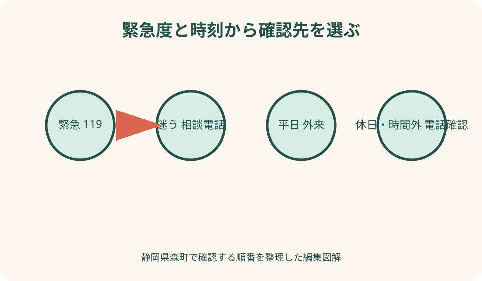
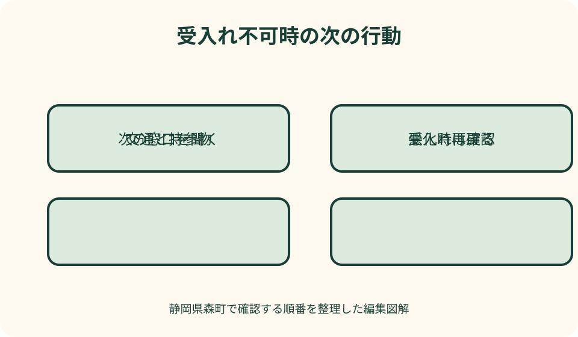

森町生活・医療｜最終確認 2026-08-10
静岡県森町の病院・休日夜間の受診先確認｜緊急度と時刻で分ける
静岡県森町で病院を探す時は、症状名から施設を決めるのではなく、明らかな緊急、判断に迷う状態、平日日中に相談できる状態の三段階へ分けます。緊急なら119番、迷うなら静岡県の#7119や子どもの#8000、平日日中なら町公式の医療機関一覧と各院の診療科・受付を確認します。休日当番や公立森町病院の時間外診療は、当日の受入れを保証する制度ではありません。必ず指定先へ電話し、氏名、年齢、状態、発生時刻、来院方法を伝え、案内された場所へ向かいます。

編集イラスト最初の分岐は緊急・迷う・平日日中の三段階
明らかに様子がおかしい、生命に関わると感じる時は119番です。具体的な症状一覧だけで自己判定せず、通報指令員の質問へ答えます。
救急車を呼ぶか、今受診するか迷う時は、静岡県救急安心電話相談#7119を確認します。相談は診断や受診保証ではなく、判断の参考です。
子どもの急な病気やけがで迷う時は、森町公式から静岡こども救急電話相談#8000へ進みます。対象年齢と現在の受付を公式で確認します。
平日日中に相談できる状態なら、かかりつけ医または町内医療機関へ電話します。本記事は緊急度を判定せず、公式窓口への接続だけを扱います。
119番は相談を終えてから使う番号ではない
森町の#7119案内は、緊急・重症時には迷わず119番と明記しています。#7119へ先に電話することを119番利用の条件にしません。
通報では、救急か火事か、場所、目印、患者の年齢と状態、通報者の連絡先を尋ねられます。質問へ簡潔に答え、勝手に電話を切りません。
観光地や山間部では、施設名だけでなく公式住所、駐車場名、現在地表示を確認します。同行者が入口で救急隊を案内できるよう分担します。
救急車を待つ間の対応は指令員や現場スタッフの指示に従います。ネットで見た処置を追加し、患者を無理に車へ移しません。
#7119は受診か救急車か迷う時の相談入口
森町公式は、急な病気やけがで病院受診や救急車利用に迷う際、看護師または医師が助言する#7119を案内しています。
電話では、年齢、持病、現在の状態、始まった時刻、変化、服薬、所在地を伝えられるようメモします。本人が話せない時は同行者が説明します。
案内された医療機関も、混雑や診療体制により受入れできない場合があります。向かう前に医療機関へ電話するという公式注意を守ります。
#7119は健康相談、継続的な医療相談、苦情の窓口とは役割が異なります。日常の健康課題はかかりつけ医や町の相談先へつなぎます。
#8000は子どもの保護者が判断に迷う時に使う
森町の『病気のとき』は、子どもの急な発熱やけがで受診を迷う保護者へ#8000を案内しています。最新の対象と利用時間をリンク先で読みます。
子どもの年齢、体重、体温、呼吸、意識、食事、水分、尿、発生時刻、服薬を記録します。診断名を当てるためでなく、相談員へ事実を伝えるためです。
旅行中は保険情報、受給者証、母子健康手帳、お薬手帳、かかりつけ先を準備します。地域外受診の助成手続きは加入自治体へ確認します。
相談中または待機中に状態が明らかに悪化した場合は、再相談の手順や119番を含め、相談員の指示に従います。
平日外来は診療科・曜日・紹介状を確認する
森町公式の医療機関一覧は候補を探す入口です。内科、外科、小児科、歯科などの名称だけで、自分の状態を診てもらえると確定しません。
公立森町病院は診療科と外来担当表を公式に掲載しています。科により曜日、受付、予約、紹介状の条件が違うため、当日の表を確認します。
町内診療所へも、初診か再診か、受診理由、発熱等の有無、予約、受付、支払を電話で尋ねます。直接訪問を受入れ保証にしません。
専門外来は完全予約や紹介が必要な場合があります。一般外来で希望科名を告げれば当日専門診療を受けられるとは考えません。
公立森町病院の通常外来は最新担当表まで読む
病院公式の外来案内には基本の受付が掲載されますが、各診療科の時間が異なる場合があります。休診・代診のお知らせと担当表を照合します。
初診は受付、保険情報確認、問診などの流れがあります。来院前問診は対象と予約手順が定められるため、入力だけで受診予約が完了したと考えません。
発熱等がある場合は通常入口と手順が異なる可能性があります。建物へ入る前に病院の最新案内を読み、電話で伝えます。
診察順は到着だけでなく医療上の判断で変わります。後から来た人が先に呼ばれても、受付へ状況を確認し、待合での口論を避けます。
休日当番医は当月・当日の表へ戻る
森町公式の『病気になったとき』は、磐周医師会・歯科医師会の救急当番と医療情報ネットへ案内しています。過去月の当番表は使いません。
当番医の所在地が森町内とは限らず、診療科や受付対象も日ごとに異なります。電話で状態、年齢、来院方法を伝え、受入れを確認します。
休日当番は、平日にできる継続診療、定期薬、詳しい検査を全て行う仕組みとは限りません。緊急性が低い相談は次の通常診療も検討します。
歯科の休日対応は医科と別の当番です。口の症状を一般の救急へ自動的に向けず、町公式から該当する案内へ進みます。

時間外救急は病院へ事前電話してから向かう
公立森町病院は時間外の救急受診について、対象時間、事前電話、伝える内容、持ち物、深夜帯の扱いを公式に示しています。
電話では氏名、生年月日、状態、来院方法、到着見込みを伝えます。電話せず玄関へ行けば必ず受入れられるとは考えません。
時間帯や状態により他医療機関を案内される場合があります。断られたと受け止めて待機せず、次にどこへ連絡するかを確認します。
時間外診療は平日日中と同じ人員、検査、専門科が常にそろう保証ではありません。緊急性が低ければ診療体制が整う時間へ案内される場合があります。
深夜は古い24時間情報を信じず現行案内を読む
公立森町病院の現行救急ページは、深夜の受診に制限があることを説明しています。古い広報や口コミの24時間表現を現在へ流用しません。
深夜に不安がある場合は、病院または#7119など公式が示す窓口へ電話します。直接来院すれば受診できるという期待を置きません。
明らかな緊急時は深夜の通常受付条件を調べ続けず119番です。緊急か迷う時は相談電話へ状態を正確に伝えます。
町外医療機関を案内されたら、受入れ、所在地、交通、所要を確認します。体調不良の本人が無理に長距離運転しません。
医療情報ネットは診療中表示を電話で確定する
厚生労働省の医療情報ネットは、医療機関や薬局の公的検索に使えます。地域、診療科、時間などで候補を絞る入口です。
検索結果は更新時点の登録情報で、現在の空き、救急受入れ、担当医、検査を保証しません。候補へ必ず電話します。
電話がつながらない場合、何度も同じ場所へかけ続けず、#7119や当番案内へ戻ります。緊急性が上がれば119番を選びます。
地図で近くても、山道、通行止め、公共交通の運休があります。受診先の案内と道路・交通情報を一緒に確認します。
受診前の電話は事実を短く伝える
電話前に、氏名、年齢、生年月日、現在地、状態、発生時刻、変化、持病、服薬、アレルギー、来院方法をメモします。
『たぶん○○病』と診断名を決めつけず、見たこと、本人が話したこと、測った値を分けます。いつからどう変わったかを時系列にします。
発熱、感染症との接触、嘔吐など入口や待機へ関わる情報を隠しません。医療機関の指示に従い、院内へ無断で入らない場合があります。
電話で受診可と言われても、到着後の診療や治療結果を約束するものではありません。到着が遅れる、状態が変わる時は再連絡します。
持参物は本人確認・服薬・経過の三群にする
本人確認と医療費には、マイナ保険証等、各種受給者証、診察券、現金や指定決済を用意します。最新の必要書類は受診先へ聞きます。
服薬情報はお薬手帳、薬袋、実際に飲んでいる市販薬やサプリの記録です。名前の分からない錠剤だけを袋へ入れて持ちません。
経過情報は、状態の開始、体温等の測定、食事・水分、排せつ、けがの状況、相談先の回答です。写真撮影は医療機関の指示とプライバシーへ配慮します。
紹介状や検査画像を持つ場合は受付へ伝えます。データを個人のSNSや非公式メールへ送らず、医療機関が示す方法を使います。
子ども・高齢者・旅行者は同行情報を追加する
子どもは年齢、体重、母子健康手帳、受給者証、かかりつけ、保護者連絡先を用意します。大人用の判断や薬を流用しません。
高齢者は普段の意識、歩行、食事、認知、介護サービス、緊急連絡先を分かる範囲で整理します。いつもとの違いを医療者へ伝えます。
旅行者は宿泊先、同行者、帰宅手段、旅行保険、かかりつけ先を記録します。診療後に一人で宿へ戻れると決めつけません。
日本語で説明が難しい場合は、医療機関へ通訳対応や利用可能な支援を相談します。子どもだけを通訳役にしません。
車・鉄道・バスは受診後の帰路まで考える
自家用車で向かう場合も、本人が運転できる状態か、服薬や処置後に運転可能かを医療者へ確認します。無理なら同行者や他手段を使います。
公立森町病院は森町病院前駅に近い立地ですが、列車運行と受診終了は一致しません。森町公式から当日の公共交通を確認します。
バスやタクシーは運行日、停留所、配車を事前に確認します。時間外に常時待機しているとは考えず、帰路がなければ受診先へ相談します。
救急車で搬送された場合、帰宅も救急車で送られるとは限りません。家族の迎え、タクシー、宿泊など退院・帰宅方法を準備します。
受入れ不可時は次の連絡先を具体的に聞く
電話先で受入れできないと言われたら、『次はどの窓口へ、いつ、何を伝えるか』を確認します。施設名だけ聞いてすぐ移動しません。
別の医療機関へは、改めて受入れを電話確認します。最初の医療機関が紹介したという理由で診察が確約されたとは考えません。
周辺市へ向かう場合は、道路、運転者、燃料、公共交通、帰路を確認します。状態が悪化すれば停車して119番等へ再相談します。
通常診療まで待つよう案内されたら、悪化時の再連絡条件、家庭で避けること、受診時刻を医療者へ尋ねます。本記事から待機方法を指示しません。

災害・停電時は通常の医療検索を切り替える
地震、大雨、停電、道路規制時は、通常の受付や電話が機能しない可能性があります。森町の防災・避難情報と医療機関の臨時案内を確認します。
避難情報が出ている時に、定期薬や予約だけを理由に危険な道路へ入りません。処方や服薬の相談先を避難所職員や医療者へ伝えます。
持出しには保険情報、お薬手帳、常用薬、眼鏡、補聴器、医療機器の電源情報を含めます。予備薬の用意は平時に主治医・薬剤師へ相談します。
救護所や病院が開くという未確認情報をSNSで拡散せず、町、県、医療機関の公式発表へ戻ります。
一人で連絡する時は電話前後の支援者を決める
体調不良の本人が一人で電話する場合、氏名、現在地、折返し番号、症状が始まった時刻、服薬情報を紙へ書き、読み上げられる範囲で伝えます。診断名を自分で決めて話す必要はありません。
電話中に移動を求められた場合は、運転できる状態か、家族・知人へ頼めるか、タクシー等を利用できるかを正直に伝えます。無理な自己運転を前提に受診先を選びません。
付き添いを頼む時は、受付で共有してよい情報、持参してほしい物、帰宅後の連絡先を本人の意思に沿って決めます。診療内容を無制限に共有する同意にはしません。
電話が切れた、折返しを受けられない、状態が変わった時は、最初の案内を固定せず再連絡します。緊急性が高いと感じる状況では、相談窓口を順番に全部回ることを優先しません。
良い点——相談・検索・診療の役割を分けられる
良い点は、森町公式から#7119、#8000、当番医、医療情報ネット、公立森町病院へ進めることです。迷いの段階に応じた入口があります。
公立森町病院は通常外来、担当表、初診、救急を別ページで説明しています。一つの代表時刻だけで全診療を誤認せずに済みます。
町内医療機関一覧は、かかりつけ候補を平時に確認する材料になります。休日の急変時に初めて全施設を検索する負担を減らせます。
医療情報ネットは町外を含む公的検索として使えます。町内で受入れできない時も、口コミ順位ではなく登録情報から候補を探せます。
注文したい点——時刻別の入口が複数ページに分かれる
注文したい点は、平日外来、休日当番、病院時間外、#7119、#8000、119番の案内が複数ページに分かれ、急ぐ時に比較しにくいことです。
現在時刻と年齢を選ぶと、電話確認先、持参物、交通を一画面で示す公式導線があれば、古い検索結果の利用を減らせます。
病院の受付時刻には、診療科別の変更、予約、紹介状、発熱時手順への直リンクが必要です。基本時刻だけで来院する誤解を防げます。
受入れ不可時に次へ進む公式手順も明示されると安心です。本記事は治療先を指定せず、次の連絡事項を具体化しています。
代案・結論——電話・持参物・帰路を一組にする
緊急なら119番、迷えば#7119または子どもの#8000、平日日中はかかりつけ・町内医療機関、休日は当月当番へ進みます。
受診先へは、状態、時刻、年齢、持病、服薬、来院方法を伝えます。診療科名だけを見て直接向かわず、受入れ確認を取ります。
保険情報、受給者証、診察券、お薬手帳、紹介状、経過メモを準備し、車・鉄道・バスと受診後の帰りを考えます。
結論は、検索結果を受診保証にしないことです。受入れ不可なら次の連絡先を聞き、状態変化があれば同じ緊急度判断へ戻ります。
大石の視点——平時に家族の医療メモを作る
私（大石）は、体調を崩してから医療機関一覧を読むのではなく、平時に家族のかかりつけ、保険情報、薬、相談番号を一枚へまとめます。
移住下見では病院の近さだけでなく、希望科の診療日、紹介状、車が使えない日、周辺市へ行く場合の帰路を確認します。
観光中も、119番が必要な状態を『旅程が崩れるから』と我慢しません。予約、食事、宿より、医療者へ状態を伝えることを優先します。
この記事の確認日は2026年8月10日です。受付、当番、救急、相談、交通は変わるため、必ず森町・県・医療機関の最新公式情報を確認してください。
家族の医療メモには氏名と生年月日だけでなく、服用中の薬を確認できる場所、かかりつけ先、移動手段、緊急連絡先を記します。症状の自己診断を書くのではなく、受診先へ正確に伝えられる事実を揃えます。
夜間に相談窓口から医療機関を案内された場合も、その案内を受入れ確定と考えず、出発前に医療機関へ連絡します。電話がつながらない、受入れが難しい、状態が変わった場合は、同じ判断表の一段前へ戻って公的窓口へ再確認します。
公式情報・確認先
掲載内容は次の一次情報を基礎に整理しました。営業、料金、催し、交通は変わるため、出発前または手続き前にリンク先で最新情報を確認してください。
- 病気になったとき（静岡県森町、2026-08-10確認）
- 救急安心電話相談窓口#7119について（静岡県森町、2026-08-10確認）
- 病気のとき（静岡県森町、2026-08-10確認）
- 暮らしの相談窓口（静岡県森町、2026-08-10確認）
- 森町の公共交通について（静岡県森町、2026-08-10確認）
- 外来のご案内（公立森町病院、2026-08-10確認）
- 救急受診について（公立森町病院、2026-08-10確認）
- 医療情報ネット（厚生労働省、2026-08-10確認）